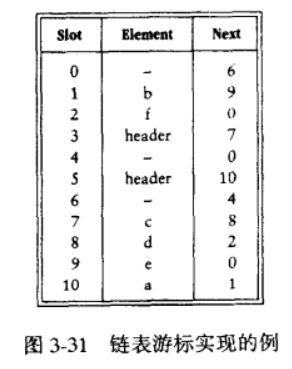

链表¶
约 1983 个字 87 行代码 预计阅读时间 11 分钟
内存空间是所有程序的公共资源，在一个复杂的系统运行环境下，空闲的内存空间可能散落在内存各处。我们知道，存储数组的内存空间必须是连续的，而当数组非常大时，内存可能无法提供如此大的连续空间。此时链表的灵活性优势就体现出来了。
「链表 linked list」是一种线性数据结构，其中的每个元素都是一个节点对象，各个节点通过“引用”相连接。引用记录了下一个节点的内存地址，通过它可以从当前节点访问到下一个节点。
链表的设计使得各个节点可以被分散存储在内存各处，它们的内存地址是无须连续的。

观察上图，链表的组成单位是「节点 node」对象。每个节点都包含两项数据：节点的“值”和指向下一节点的“引用”。
- 链表的首个节点被称为“头节点”，最后一个节点被称为“尾节点”。
- 尾节点指向的是“空”，它在 Java、C++ 和 Python 中分别被记为 \(\text{null}\)、\(\text{nullptr}\) 和 \(\text{None}\) 。
- 在 C、C++、Go 和 Rust 等支持指针的语言中，上述的“引用”应被替换为“指针”。
如以下代码所示，链表节点 ListNode 除了包含值，还需额外保存一个引用（指针）。因此在相同数据量下，链表比数组占用更多的内存空间。
链表常用操作¶
初始化链表¶
建立链表分为两步，第一步是初始化各个节点对象，第二步是构建引用指向关系。初始化完成后，我们就可以从链表的头节点出发，通过引用指向 next 依次访问所有节点。
数组整体是一个变量，比如数组 nums 包含元素 nums[0] 和 nums[1] 等，而链表是由多个独立的节点对象组成的。我们通常将头节点当作链表的代称，比如以上代码中的链表可被记做链表 n0 。
插入节点¶
在链表中插入节点非常容易。如下图所示，假设我们想在相邻的两个节点 n0 和 n1 之间插入一个新节点 P ，则只需要改变两个节点引用（指针）即可，时间复杂度为 \(O(1)\) 。
相比之下，在数组中插入元素的时间复杂度为 \(O(n)\) ，在大数据量下的效率较低。

删除节点¶
如下图所示，在链表中删除节点也非常方便，只需改变一个节点的引用（指针）即可。
请注意，尽管在删除操作完成后节点 P 仍然指向 n1 ，但实际上遍历此链表已经无法访问到 P ，这意味着 P 已经不再属于该链表了。

访问节点¶
在链表访问节点的效率较低。如上节所述，我们可以在 \(O(1)\) 时间下访问数组中的任意元素。链表则不然，程序需要从头节点出发，逐个向后遍历，直至找到目标节点。也就是说，访问链表的第 \(i\) 个节点需要循环 \(i - 1\) 轮，时间复杂度为 \(O(n)\) 。
查找节点¶
遍历链表，查找链表内值为 target 的节点，输出节点在链表中的索引。此过程也属于线性查找。
数组 VS 链表¶
下表总结对比了数组和链表的各项特点与操作效率。由于它们采用两种相反的存储策略，因此各种性质和操作效率也呈现对立的特点。
表
| 数组 | 链表 | |
|---|---|---|
| 存储方式 | 连续内存空间 | 分散内存空间 |
| 缓存局部性 | 友好 | 不友好 |
| 容量扩展 | 长度不可变 | 可灵活扩展 |
| 内存效率 | 占用内存少、浪费部分空间 | 占用内存多 |
| 访问元素 | \(O(1)\) | \(O(n)\) |
| 添加元素 | \(O(n)\) | \(O(1)\) |
| 删除元素 | \(O(n)\) | \(O(1)\) |
常见链表类型¶
如下图所示，常见的链表类型包括三种。
- 单向链表：即上述介绍的普通链表。单向链表的节点包含值和指向下一节点的引用两项数据。我们将首个节点称为头节点，将最后一个节点称为尾节点，尾节点指向空 \(\text{None}\) 。
- 环形链表：如果我们令单向链表的尾节点指向头节点（即首尾相接），则得到一个环形链表。在环形链表中，任意节点都可以视作头节点。
- 双向链表：与单向链表相比，双向链表记录了两个方向的引用。双向链表的节点定义同时包含指向后继节点（下一个节点）和前驱节点（上一个节点）的引用（指针）。相较于单向链表，双向链表更具灵活性，可以朝两个方向遍历链表，但相应地也需要占用更多的内存空间。
/* 双向链表节点结构体 */
struct ListNode {
int val; // 节点值
struct ListNode *next; // 指向后继节点的指针
struct ListNode *prev; // 指向前驱节点的指针
};
typedef struct ListNode ListNode;
/* 构造函数 */
ListNode *newListNode(int val) {
ListNode *node, *next;
node = (ListNode *) malloc(sizeof(ListNode));
node->val = val;
node->next = NULL;
node->prev = NULL;
return node;
}

链表典型应用¶
单向链表通常用于实现栈、队列、哈希表和图等数据结构。
- 栈与队列：当插入和删除操作都在链表的一端进行时，它表现出先进后出的的特性，对应栈；当插入操作在链表的一端进行，删除操作在链表的另一端进行，它表现出先进先出的特性，对应队列。
- 哈希表：链地址法是解决哈希冲突的主流方案之一，在该方案中，所有冲突的元素都会被放到一个链表中。
- 图：邻接表是表示图的一种常用方式，在其中，图的每个顶点都与一个链表相关联，链表中的每个元素都代表与该顶点相连的其他顶点。
双向链表常被用于需要快速查找前一个和下一个元素的场景。
- 高级数据结构：比如在红黑树、B 树中，我们需要访问节点的父节点，这可以通过在节点中保存一个指向父节点的引用来实现，类似于双向链表。
- 浏览器历史：在网页浏览器中，当用户点击前进或后退按钮时，浏览器需要知道用户访问过的前一个和后一个网页。双向链表的特性使得这种操作变得简单。
- LRU 算法：在缓存淘汰算法（LRU）中，我们需要快速找到最近最少使用的数据，以及支持快速地添加和删除节点。这时候使用双向链表就非常合适。
循环链表常被用于需要周期性操作的场景，比如操作系统的资源调度。
- 时间片轮转调度算法：在操作系统中，时间片轮转调度算法是一种常见的 CPU 调度算法，它需要对一组进程进行循环。每个进程被赋予一个时间片，当时间片用完时，CPU 将切换到下一个进程。这种循环的操作就可以通过循环链表来实现。
- 数据缓冲区：在某些数据缓冲区的实现中，也可能会使用到循环链表。比如在音频、视频播放器中，数据流可能会被分成多个缓冲块并放入一个循环链表，以便实现无缝播放。
没有指针的语言：游标法¶

游标法是一种在没有指针的语言中实现链表的方法。在游标法中，我们使用一个数组来模拟链表的节点，数组的索引代表节点的引用。比如在上图中，元素 b 的Next= 9 代表下一个节点的索引为 9 ，即 e 。